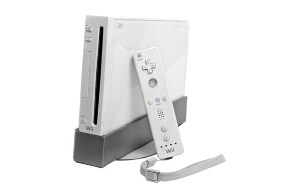
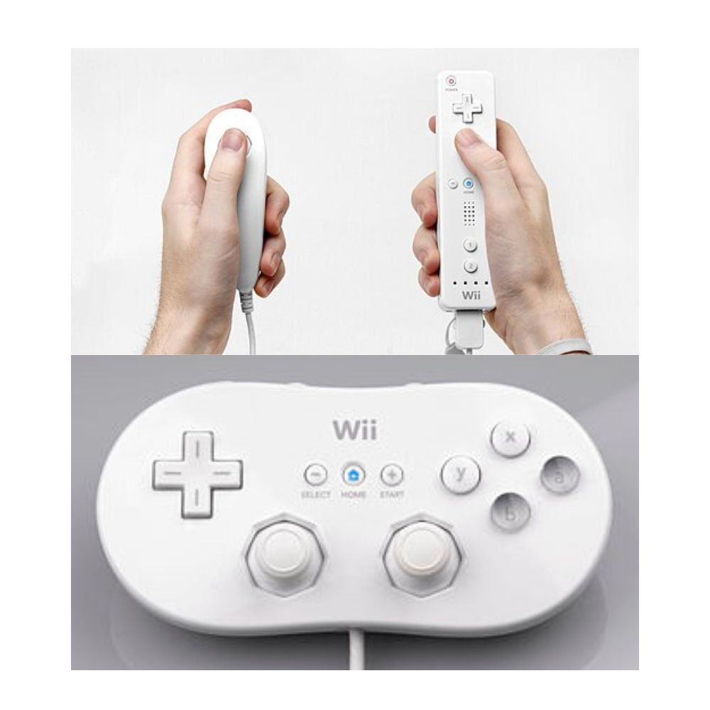
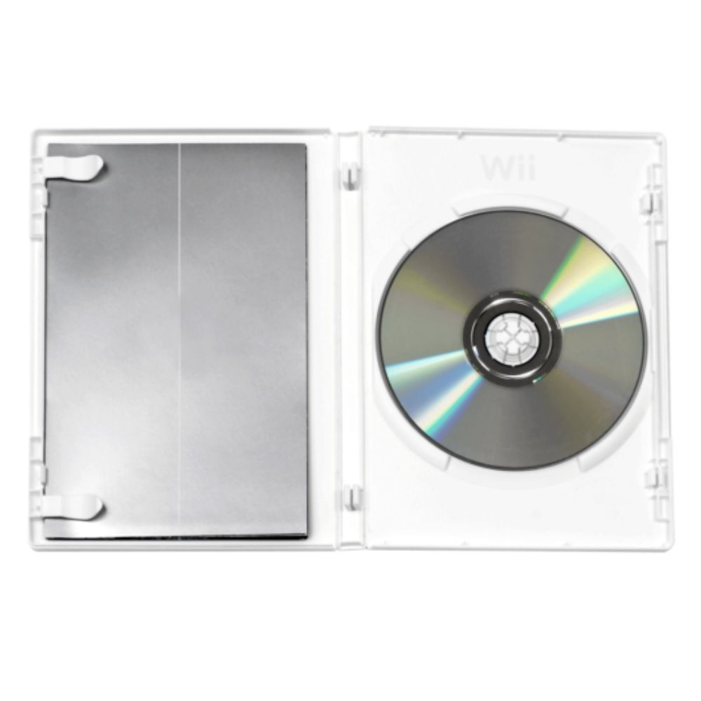

Nintendo Wii

O Nintendo Wii (oficialmente chamado comoWii) é um console de jogos eletrônicos doméstico de sétima geração desenvolvido e comercializado pela japonesa Nintendo. Foi lançado em 19 de novembro de 2006 como sucessor do console GameCube para competir com os consoles Xbox 360 da Microsoft e o PlayStation 3 da Sony, para assim atingir um público-alvo mais amplo que a concorrência. Desde sua estreia, o console superou seus concorrentes em vendas, e em dezembro de 2009, bateu o recorde de console mais vendido em um único mês nos Estados Unidos.
Em seu desenvolvimento, o ex-presidente da Nintendo, Satoru Iwata, evitou construir um console focado em gráficos computacionais e poder de fogo que pudesse competir com os consoles da Sony e Microsoft e, em vez disso, focou em atingir um público mais amplo de jogadores por meio de uma nova jogabilidade. Os designers de jogos Shigeru Miyamoto e Genyo Takeda lideraram o desenvolvimento do console sob o codinome Revolution. O Wii introduziu o controle Wii Remote (Comando Wii em Portugal), que pode ser usado como um dispositivo apontador portátil. Contem giroscópio e acelerômetro. O console executa jogos armazenados em discos ópticos Wii criados pela Matsushita (Panasonic). Foi o primeiro console de mesa da Nintendo com suporte a conectividade com a internet, permitindo jogatina online e a distribuição de jogos e aplicativos por meio da Wii Shop Channel.
Os primeiros modelos são totalmente retrocompatíveis com o títulos de GameCube todos os jogos do antecessor e com a maioria dos acessórios. A Nintendo o apresentou na feira internacional E3 de 2005. O CEO da Nintendo, Satoru Iwata, revelou um protótipo do controle em setembro de 2005 na feira Tokyo Game Show. Na E3 de 2006, o console ganhou a primeira premiação. Em 4 de novembro de 2011, foi lançada a versão Wii Family Edition, sem a retrocompatibilidade com o GameCube e o console era posicionado apenas na posição horizontal.
O Wii mini, o último redesign do console, foi lançado no Canadá em 7 de dezembro de 2012 e 17 de novembro de 2013 no Estados Unidos. O modelo não possui compatibilidade com o GameCube, sem entrada para cartão SD e conectividade online, como Wii Shop Channel e Nintendo Wi-Fi Connection. O sucessor do Wii, o Wii U, foi lançado em 18 de novembro de 2012. Em outubro de 2013, a Nintendo confirmou que havia descontinuado a produção do Wii no Japão e na Europa
Desde o primeiro trimestre de 2006, o Wii liderou sua geração sobre o PlayStation 3 e o Xbox 360 em vendas mundiais, tornando-se o console mais vendido da sétima geração com mais de 101 milhões de unidades vendidas. Foi o console de mesa mais vendido da Nintendo até ser ultrapassado pelo Nintendo Switch em 2021.
História
O console foi concebido em 2001, quando o Nintendo GameCube foi lançado. De acordo com uma entrevista com o designer de jogos da Nintendo, Shigeru Miyamoto, o conceito envolveu o foco em uma nova forma de interação do jogador. O consenso era que o poder não é tudo para um console. Muitos consoles poderosos não podem coexistir. É como ter apenas dinossauros ferozes. Eles podem lutar e apressar sua própria extinção.
Em 2003, engenheiros e designers de jogos foram reunidos para desenvolver ainda mais o conceito. Em 2005, a interface do controle tinha ganhado forma, mas uma exibição pública naquele ano foi cancelada. Miyamoto afirmou que a empresa tinha alguns problemas para resolver. Então decidimos não revelar o controle e, em vez disso, exibimos apenas o console
. O presidente da Nintendo, Satoru Iwata, revelou mais tarde e demonstrou o Wii Remote na Tokyo Game Show de setembro daquele ano.
É dito que o Nintendo DS influenciou o design do Wii. O designer Ken'ichiro Ashida observou:
"Tínhamos o DS em mente enquanto trabalhávamos no Wii. Pensamos em copiar a interface do painel de toque do DS e até criamos um protótipo". A ideia acabou sendo rejeitada por causa da noção de que os dois sistemas de jogos seriam idênticos. Miyamoto também afirmou:
[...] se o DS fracassasse, poderíamos ter levado o Wii de volta à prancheta. Em junho de 2011, a Nintendo lançou o protótipo do sucessor do Wii, conhecido como o Wii U.
Controles

O Wii Remote (Comando Wii em Portugal) é o controle principal do console. Ele usa uma combinação de acelerômetros internos e detecção por infravermelho para detectar sua posição no espaço 3D quando apontado para os LEDs na barra de sensores.Esse design permite que os usuários controlem o jogo com gestos físicos e pressionamentos de botão. O controle se conecta ao console usando Bluetooth com um alcance aproximado de 9,1 m (109 pés), e apresenta um ruído e um alto-falante interno. Uma pulseira de pulso acoplável pode ser usada para impedir que o jogador derrube (ou atire) acidentalmente o Wii Remote. Desde então, a Nintendo ofereceu uma cinta mais forte e o Wii Remote Jacket para fornecer aderência e proteção extras.
Os acessórios podem ser conectados a um Wii Remote através de uma entrada proprietária na base do controle, como o Nunchuk - uma extensão portátil com acelerômetro, controle analógico e dois botões adicionais. Um acessório de expansão conhecido como Wii MotionPlus aumenta os sensores existentes do Wii Remote com giroscópios para permitir uma melhor detecção de movimento; a funcionalidade MotionPlus foi posteriormente incorporada a uma revisão do controlador conhecida como Wii Remote Plus. Na E3 2009, a Nintendo também apresentou um acessório denominado "Vitality Sensor" que poderia ser usado para medir o pulso de um jogador. Em uma sessão de perguntas e respostas de 2013, Satoru Iwata revelou que o Vitality Sensor havia sido arquivado, pois testes internos descobriram que o dispositivo não funcionava com todos os usuários, e seus casos de uso eram muito limitados.
O Classic Controller é outra extensão do Wii Remote e é mais parecido com os controles clássicos. Os jogadores podem usá-lo com jogos do Virtual Console, além de jogos projetados para o Wii.
Jogos

As cópias de varejo dos jogos foram lançadas utilizando discos ópticos proprietários do Wii, do tipo DVD, que são embalados em caixas com instruções. Na Europa, as caixas têm um triângulo no canto inferior do lado da manga do papel. O triângulo é codificado por cores para identificar a região para a qual o título se destina e quais idiomas manuais estão incluídos. O console apresenta restrições de região: o software disponível em uma região pode ser reproduzido apenas no hardware dessa região.
Os jogos das principais franquias da Nintendo (incluindo The Legend of Zelda, Super Mario, Pokémon e Metroid) foram lançados, além de muitos títulos originais e jogos desenvolvidos por desenvolvedoras terceiras. A Nintendo recebeu suporte de empresas como Ubisoft, Sega, Square Enix, Activision Blizzard, Electronic Arts e Capcom, com mais jogos sendo desenvolvidos para o Wii do que para o PlayStation 3 ou Xbox 360. A Nintendo também lançou a linha New Play Control!, uma seleção de jogos aprimorados do GameCube para o Wii com controles atualizados.
O pacote de desenvolvimento de jogos Unity pode ser usado para criar jogos oficiais do Wii; no entanto, o desenvolvedor deve ser autorizado pela Nintendo para desenvolver programações para o console. Os jogos também devem ser aceitos pela empresa para serem vendidos.
Até 31 de dezembro de 2018, 920,66 milhões de jogos do Wii haviam sido vendidos em todo o mundo, e 104 títulos haviam ultrapassado a marca de um milhão de unidades em março de 2011. Wii Sports, o jogo de maior sucesso do console (que vem incluso com o Wii na maioria das regiões) vendeu 82,86 milhões de cópias em todo o mundo até 30 de setembro de 2018, superando Super Mario Bros. como o videogame mais vendido de todos os tempos em 2009. O jogo não incluso com o console mais vendido, Mario Kart Wii, vendeu 37,14 milhões de cópias em todo o mundo até 30 de setembro de 2018.
Just Dance 2020 da Ubisoft foi o último jogo a ser lançado para o sistema na América, 13 anos após o lançamento do Wii, sendo o último jogo em geral Shakedown: Hawaii, lançado para Wii apenas na Europa em 9 de julho de 2020.
Mario Kart WiiGameplay- demonstração do jogo.
Especificações
| CPU | GPU | ||
|---|---|---|---|
| Fabricante: | IBM / Nintendo Broadway (PowerPC) |
Fabricante: | ATI / Nintendo Hollywood |
| Clock: | ~729 MHz | Clock: | ~243 MHz |
| Memória | Resolução / Vídeo | ||
| 24 MB 1T-SRAM integrada + 64 MB GDDR3 externa = ~88 MB total | Saída padrão: definições SD (não suporte nativo a HD completo) | ||
| Armazenamento interno | Mídia | ||
| Flash interna: | 512 MB (para downloads, “canal” etc) | Saída padrão: | definições SD (não suporte nativo a HD completo) |